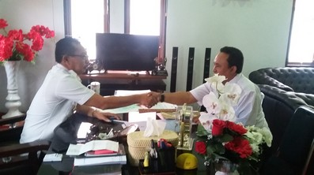
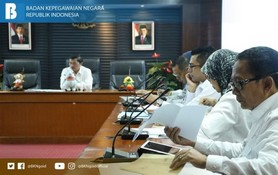

BADAN KEPEGAWAIAN DAN PENGEMBANGAN
SUMBER DAYA MANUSIA
Sekilas



MATERI KEPEGAWAIAN
Jaring Peminat Berkualitas, Pansel CPNS BKN 2018 Siapkan 3 Jenis Seleksi
Foto Bersama Bupati Maluku Barat Daya Drs. Barnabas N. Orno dalam rangka meminta dukungan dalam pelaksanaan Proyek Perubahan (Proper) PIM IV angkatan XIX.(doc)

Jakarta-Humas BKN, Dalam rangka menjaring ASN berkualitas Panitia Seleksi (Pansel) CPNS BKN Tahun 2018, kembali bertekad melaksanakan sistem seleksi yang obyektif,
transparan, akuntabel serta bebas KKN. Untuk menemukan peserta yang berkualitas tersebut, pelamar yang berminat mendaftar CPNS di lingkungan BKN akan mengikuti tiga jenis seleksi. Hal tersebut diuangkapkan Sekretaris Utama BKN selaku Ketua Pansel CPNS BKN Tahun 2018 Supranawa Yusuf di sela-sela Rapat(Read)